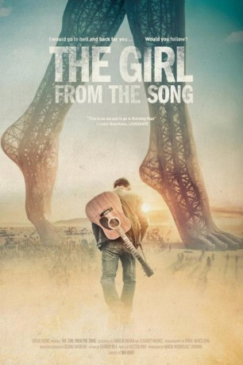

IMDB-Wertung: 5.7 / 10
IMDB-Wertung: 5.7 / 10  Metascore:
Metascore: 
A young musician travels to Burning Man, a psychedelic festival in the middle of the Nevada desert, in an attempt to get the impetuous girl he has fallen in love with.
 IMDB-Wertung: 5.7 / 10 Metascore:
A young musician travels to Burning Man, a psychedelic festival in the middle of the Nevada desert, in an attempt to get the impetuous girl he has fallen in love with.
Jahr: 2017
Dauer: 102 Minuten
FSK:
Land: Spanien Studio: Flat Cap FilmsTonspuren: DTS - ,
Untertitel: Deutsch,
Auflösung: 1080p (1920x808) Größe: 6420 MB
Regisseur: Ibai Abad
Drehbuch: Natalia Durán
Soundtrack:
Darsteller:
Datei: X:\2017(G-M)\Girl from the Song, The (2017, FSK, 1920x808).mkv seit 20.07.2017
Festplatte: HD 2017(A-Z)-2018(A-F)
 Es gibt insgesamt 148 Filme in der Gruppe '2017(G-M)'
Es gibt insgesamt 148 Filme in der Gruppe '2017(G-M)'